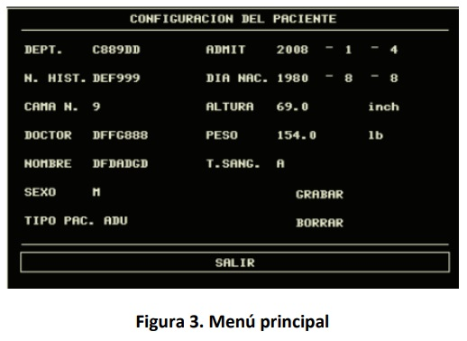
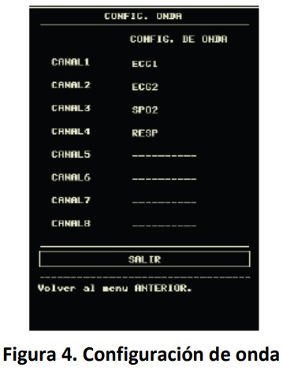

| Código: | ESP-BIO-18 | Versión: | 01 |
| Emisión: | 18-nov-21 | Vigencia: | 2 años |
Departamento de Biomédica Ext:123
Un monitor de signos vitales mide y muestra en tiempo real parámetros como la frecuencia cardíaca, presión arterial, oxígeno en sangre y temperatura. Se utiliza para supervisar la salud de los pacientes en entornos clínicos.
| 1.- Botón POWER | Enciende/Apaga el Equipo Médico |
| 2.-Botón MENU | Presiones este botón para abrir el Menú Principal, en el cual el usuario podrá configurar el sistema de información y realizar la función de revisión. |
| 3.-Botón NIBP | Presione para inflar el manguito para iniciar la medición de la presión arterial. Cuando mida, pulse para cancelar la medición y desinflar el manguito. |
| 4.-Botón REC/STOP | Pulse para iniciar una grabación en tiempo real. El tiempo de grabación se fija en REC TIME del submenú CONFIGURACIÓN DE GRABACIÓN. Pulse durante la grabación para detener la grabación |
| 5.- Botón SILENCE | Pulse este botón para suspender la señal de alarma durante un máximo de 3 minutos. En el estado de PAUSA de alarma, aparece un símbolo en el área de mensajes. Pulse este botón durante más de 1 segundo para silenciar todo tipo de sonidos. Pulse este botón para restaurar todo tipo de sonidos y el símbolo aparecerá en la pantalla. |
| 6.- Botón FREEZE | Presione este botón y el sistema accederá a la condición CONGELAR. En este estado el usuario puede revisar la forma de onda de 34 segundos. La forma de onda congelada se puede imprimir. |
| 7.- Botón MAIN | Presione este botón y el sistema siempre volverá a la pantalla principal. |
| 8.- Botón Giratorio | El usuario puede utilizar el botón giratorio para seleccionar la opción de menú y modificar la configuración.El usuario puede utilizar este mando para realizar las operaciones en la pantalla, en el menú del sistema y menú de parámetros. |
El sistema proporciona tres niveles de volumen de alarma. Usted
puede seleccionar cualquiera de ellos según los requisito clínicos.
Los procedimientos son los siguientes:
Elija la [CONFIGURAR PAT] en el “MENU PRINCIPAL” para abrir el siguiente menú.
Puede configurar la siguiente información del paciente:
Acceda al menú NIBP SETUP y escoja el elemento INTERVAL, hay tres modos de medición disponibles: manual, automático y continuo. Cada modo indica la presión arterial diastólica, sistólica y media.
Seleccione el tema [WAVE SETUP] en el menú “SYSTEM SETUP” para abrir el siguiente menú: Usted puede cambiar la posición de la forma de onda
Seleccione [WAVE SELECT] en el menú “SYSTEM SETUP” para abrir el siguiente menú:
| 1.- No Enciende |
|
| 2.Pantalla LCD con fallos o sin imagen | Verificar la conexión entre la pantalla LCD y la placa principal. Reemplazar los cables si están defectuosos. |
| 3.-Sin onda de ECG |
|
| 4.-Ruido en la Onda ECG | Asegúrese de que el cable del paciente esté en buenas condiciones y esté colocado correctamente. Y haga que el paciente se relaje sin moverse. |
| 5.- Sin señal SPO2 |
|